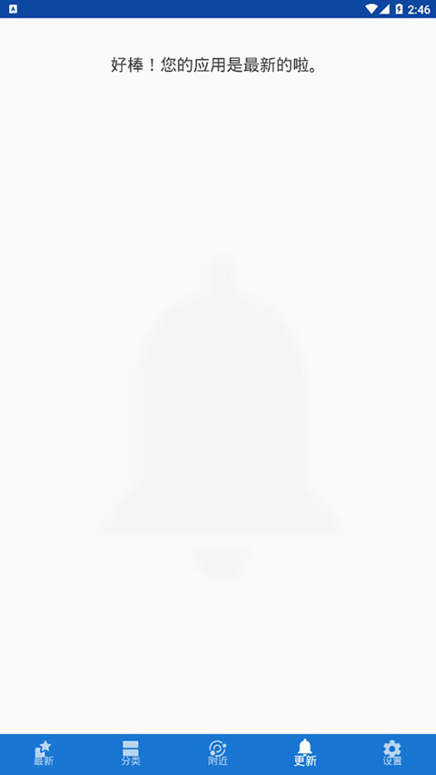

告别 Google Play 的第一步：用 F-Droid 找到你真正需要的 App
第一次接触 F-Droid 完全不用慌。这篇文章从零带你理解它是什么、怎么装、能做什么——五分钟上手，以后找 Android 应用再也不用被广告和追踪骚扰。
这篇能带你从完全不懂到用起来。不需要任何技术基础，甚至你连"开源"这个词是什么意思都无所谓——跟着步骤走，五分钟之后你就能在手机上用 F-Droid 找应用了。
它到底是干嘛的？一个生活化类比
想象一下你家楼下有两个菜市场。
一个是连锁大超市，货架满满当当，但你买的每棵菜都被要求登记手机号，菜上贴着条形码记录你什么时候买的、买了几次，而且有些货架你明明想买却被店员悄悄撤走了——理由你也不知道。
另一个是社区小菜市，摊位都是街坊邻居自己摆的。每棵菜你都能看到它是哪家种的、用了什么肥料、有没有打过农药。没人查你手机号，也没人跟踪你今天逛了几个摊位。
F-Droid官网 就是后者。它是一个专门给 Android 手机用的开源应用商店——这里所有上架的应用，源代码都公开（你要是看得懂可以自己检查里面有没有偷偷干坏事），而且所有应用都不包含追踪你行为的代码，不要求不必要的权限，不会弹出烦人的广告。
对普通用户来说，最直接的好处就两个：隐私更干净，体验更纯粹。

五分钟上手：从下载安装到第一次跑通
第一步：打开手机的"未知来源"开关
Android 出于安全考虑，默认只允许从官方应用商店装软件。你要装 F-Droid，得先开这个权限。
路径是这样的（不同品牌手机名字略有差异）：设置 → 安全和隐私 → 安装未知应用，然后找到你要用的浏览器（比如 Chrome 或者系统自带浏览器），把它的权限打开。
别担心——这个开关只表示"允许从这个渠道来的文件安装"，不是把手机安全关掉。装完 F-Droid 之后，后续的应用安装都由 F-Droid 自己来处理，你不需要每次都来回切换。
华为/荣耀的用户注意了：你们的 EMUI 或 HarmonyOS 对后台管得特别严，装完 F-Droid 之后记得去设置 → 电池优化里把它加进白名单，否则自动更新通知可能被系统杀掉。
第二步：下载并安装 F-Droid
打开浏览器，访问 F-Droid 的官方下载页面。点击那个大按钮下载最新版的 APK 文件。
下载完成后，点文件就能安装。系统可能会弹一个"是否允许安装"的确认框，点"安装"就好。整个过程和你装任何一个 APK 文件没区别。
如果安装时提示"解析包时出现问题"，通常有两个原因：要么是下载的文件损坏了（重新下一遍），要么是你的 Android 版本太低——F-Droid 2.0.1 要求 Android 7.0 以上。太老的设备可以找旧版 F-Droid（1.23.x 支持 Android 6.0）。
第三步：打开 F-Droid，等它同步完仓库
第一次打开 F-Droid，它会花几十秒同步一个全球的应用索引（就是一份"F-Droid 上所有应用的完整目录"）。这个过程需要联网，建议用 Wi-Fi，速度会快一些。
同步完之后，你就能看到主界面了：分类列表、最近更新、热门推荐，和你用过的任何一个应用商店界面都差不多。但仔细看每个应用的详情页，你会发现不一样的地方。

上手后先玩这三个功能
F-Droid 的全部用法远不止这三样，但作为新手，先把下面这三个功能玩明白，你就能感受到它和 Google Play 的核心区别。
功能一：看权限说明——真的知道应用在要什么
每个应用的详情页里都有一个"权限"区域。点开之后你会发现，F-Droid 不会像其他商店那样只给你一个笼统的"网络"或"存储"分类，而是逐条解释每个权限的具体用途。
比如你看到"拥有完全的网络访问权限"这一条，下面会跟着解释："允许此应用创建网络套接字和使用自定义网络协议。浏览器和其他应用提供了将数据发送到互联网的方法，因此不需要此权限将数据发送到互联网。"
这意味着什么？你可以用权限来判断一个应用靠不靠谱。假设两个功能差不多的笔记应用，一个只申请了"访问存储"和"开机启动"，另一个还额外要了"精确位置"和"麦克风"——后者就非常可疑，你可以果断选前者。
顺便说一句，F-Droid 客户端自己申请的权限其实非常克制：扫描已安装应用、触发安装流程、下载 APK、蓝牙/局域网分享、开机检查更新、显示通知。它不需要你的通讯录、短信、完整存储读写、麦克风、精确位置、相机——除非你主动用 Nearby 功能扫描二维码。
功能二：安装和更新——简单，自动，无追踪
在 F-Droid 里安装应用和在其他商店里点一下就装的体验一模一样。但有一个细节值得你注意：F-Droid 在后台做了一套完整的安全验证链——具体的三层信任链细节，F-Droid文档里有详细说明。
简单说就是三层：仓库索引签名 → APK 数字签名 → APK 文件哈希。只有这三层全部验证通过，F-Droid 才会把 APK 标记为可信并允许安装。你完全不用手动管这些——客户端在后台自动完成了，你只需要看到"验证通过"然后点安装就行。
自动更新也是同样的省心：F-Droid 会定期检查你装的应用有没有新版本，有就推送通知，你点一下确认就好。不会有强制更新，也不会有那种"为了更好的体验请允许我们收集……"的弹窗。
功能三：离线分享——不用流量传应用
这个功能叫 Nearby，可能是 F-Droid 最被低估的功能了。
想象一下：你和朋友出门，他想装你手机上某个好用的应用，但他没网，或者那个应用在他的运营商网络下下载特别慢。这时候你们俩同时打开 F-Droid 的 Nearby，手机通过蓝牙或局域网直接配对，就能把应用从你的手机直接传过去——完全不用走互联网，速度快而且省流量。
操作很简单：你打开 F-Droid，滑到"我的应用"标签，找到要分享的那个应用，点旁边的 Nearby 图标；对方打开 F-Droid 的 Nearby 页面，就能搜到你的设备。双方确认一下，传输就开始了。
唯一要注意的是：两边都得是最新版 F-Droid，都开蓝牙，都授予定位权限，而且最好在同一个 Wi-Fi 或者其中一台开个热点。

小白的三个常见疑问
Q：F-Droid 会不会泄露我的隐私？
恰恰相反。F-Droid 的整个设计目标就是保护你的隐私。它不要求不必要的权限、每个权限都有中文说明、所有应用源代码公开可以被任何人审计、不包含追踪行为、不显示个性化广告（因为它根本不知道你是谁、你喜欢什么）。
F-Droid 客户端本身的行为也完全透明——它只做三件事：帮你找应用、帮你装应用、帮你更新应用。不收集、不上传、不分析。
Q：我平时用 Google Play，会冲突吗？
完全不会。你可以两个商店同时装着用，互不干扰。F-Droid 不会替换掉你已有的任何应用——它只负责安装新的，或者更新你从 F-Droid 装的那批应用。
如果你某个应用是从 Google Play 装的，F-Droid 不会尝试去更新它，反之亦然。两个来源各管各的，不会出现"同包名不同签名"的冲突。
Q：F-Droid 上应用全吗？会不会找不到我想要的？
F-Droid 收录的应用都是开源的——这意味着它不可能有微信、支付宝、抖音这些闭源大厂应用。但在"个人效率、安全工具、阅读、音乐、视频、社交"等类别里，F-Droid 有大量经过社区审查的高质量替代品。
比如你想找一个笔记 App，可以用 OpenNote；想找一个音乐播放器，可以用 MusicBee 或者 Simple Music Player；想找一个网盘客户端，可以用 Nextcloud。这些应用的质量不会比大厂的差，而且没有广告、不追踪你。
找不到的时候怎么办？先翻分类，用搜索关键词换几种写法试试，也可以看看 F-Droid 社区论坛的推荐帖子。F-Droid 有超过 4000 款应用，日常使用的覆盖度已经相当不错。
写在最后
F-Droid 并不完美——界面没有 Google Play 那么花哨，有些应用的中文文档不全，国内访问官方仓库偶尔会慢。但它给了你一个选择权：当你厌倦了被广告轰炸、被追踪行为、被强制更新绑架的时候，F-Droid 是一个干净、简单、尊重你的替代方案。
现在你已经知道怎么装、怎么用三个核心功能、怎么排查常见问题了。去把它装上，花十分钟逛一遍分类，挑一个你平时常用的应用试试看——也许你会发现，好的软件从来不需要那么多权限和广告。
如果装完之后想更深入地挖细节，还有很多内容可以慢慢探索。本文涉及的文档素材同时在GitHub、Gitee 和 GitCode 三个仓库有备份，国内用户访问时任选其一即可。